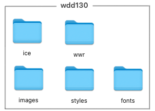
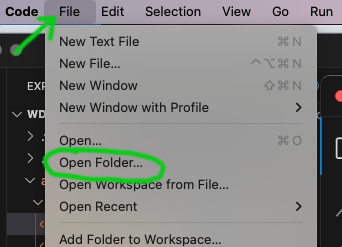
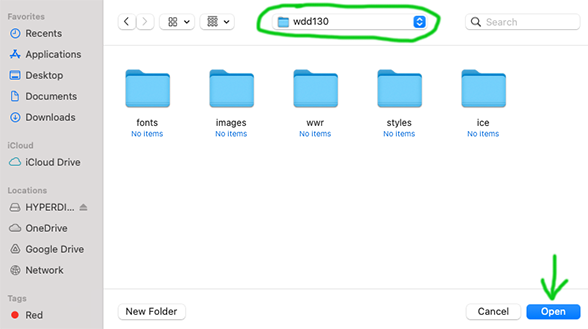
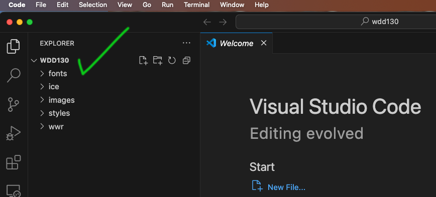

WEB Fundamentals
WDD 130
Internet Pioneers Group Exploration
Overview
- Task: Create a presentation about the people who pioneered the internet and web
- Purpose: To review the basic terms of the internet and the web through the people who invented them.
Instructions
Choose one of the Pioneers and answer the following questions:
- Origin story: Where were they born and where did end up?
- Claim to fame: What did they invent? How did they do it?
- Latest news: What are they doing today?
- Editorial: What is an interesting fact?
Instructions
-
Create your wdd130 folder
The base folder you use for this course should be named wdd130. Inside the base folder create five folders named: ice, wwr, images, styles, and fonts.

- ice - In Class Exercises: this folder will be where our in class coding challenges will be saved.
- wwr - White Water Rafting: this folder will be where you save your files for the example website you will code with step by step instructions.
- images, styles, and fonts: these folders will be where you save resources for your portal page that will have links to all your work in this class.
-
Open wdd130 folder in VSCode
Once you have created your folders. Go to your VSCode editor and choose File->Open Folder. Find and select your wdd130 folder then click the open button.

Open Folder"> Screen shots from Mac OS. VSCode on Windows will be similar.

Now you are ready to start making HTML files!